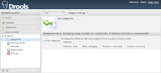
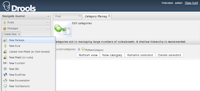
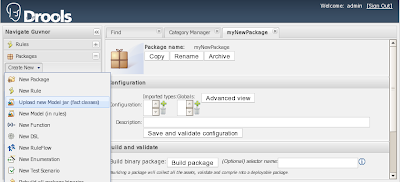
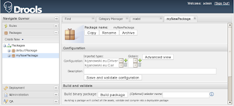
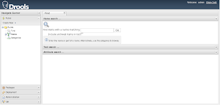
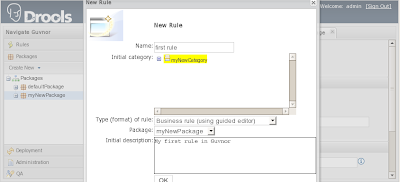
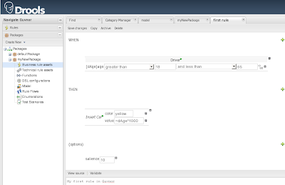
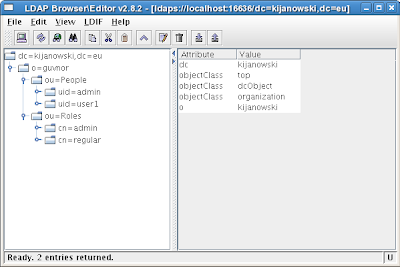
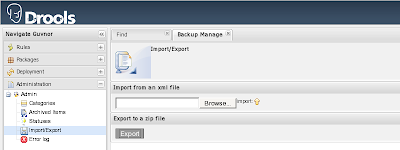
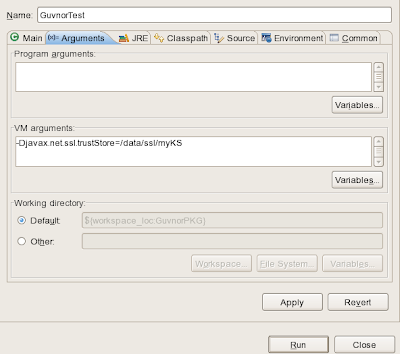

Tuning Guvnor
Guvnor is the business rules management system in Drools 5. When you deploy it out of the box, you get an unsecured web application that stores data in Jackrabbit’s embedded Derby database.
This article explains how to tune Guvnor deployed on JBoss Application Server 4.2.3. This means that we will use the container’s configuration files and security infrastructure. We will cover enabling password validation based on an LDAP server, moving from the default data repository, and enabling SSL for better security.
- Installation
- Quick introduction
- Enable user/password validation
- Use OpenLDAP as a user repository
- Use MySQL as a data repository
- Enable SSL
- How to use a secured Guvnor package
- Summary
- Installation
- Quick introduction
Before you can start using Guvnor for rule authoring, you need to perform some basic setup. We will need to create a category, make a package, and upload your facts. Let’s log in.- Categories
- Packages
- Facts
You will need to create at least one category, under which you will store your rules. Categories are for classification purposes. You will normally want to provide meaningful names like ‘Insurance’ or ‘Discount,’ but for this test instance, we’ll just create ‘MyNewCategory.’ On the left side click on the ‘Administration’ tab, expand the ‘Admin’ list, and then click on ‘Categories’:

Create a category by clicking on ‘New category’ and providing a name.A package is a place where rules are stored. It also includes globals and imports of all the facts and other classes we would like to use in our rules–for example, ArrayLists or Iterators. To create a package, expand the ‘Package’ tab and click on ‘Create New’ -> ‘New Package’

You can create a new package by providing its name (our example is myNewPackage) or by importing one from a drl file. In either case, you will need to provide the facts you’re going to use in your rules.Next, you will create classes you would like to use in your rules. For this example, I’ll use a Driver and a Car class:
Driver.javapackage kijanowski.eu;
public class Driver {
private String name;
private int age;
private Car car;
public Driver() {}
public Driver(String name, int age, Car car) {
this.name = name;
this.age = age;
this.car = car;
}
public String getName() {
return name;
}
public void setName(String name) {
this.name = name;
}
public int getAge() {
return age;
}
public void setAge(int age) {
this.age = age;
}
public Car getCar() {
return car;
}
public void setCar(Car car) {
this.car = car;
}
}Car.java
package kijanowski.eu;
public class Car {
private String color;
private double value;
public Car() {}
public Car(String color, double value) {
this.color = color;
this.value = value;
}
public String getColor() {
return color;
}
public void setColor(String color) {
this.color = color;
}
public double getValue() {
return value;
}
public void setValue(double value) {
this.value = value;
}
}Compile these java files (if not already done by your IDE) and create an java archive:
$ javac -d . *.java
$ jar cf model.jar kijanowskiImport the new model to your package. From the ‘Packages’ tab click on ‘Create New’ -> ‘Upload new Model jar’:

Provide a name and select myNewPackage as the destination package. Provide a path (or click on Browse and navigate) to your facts archive. Finally, click on Upload.
When you choose myNewPackage from the ‘Packages’ tab, you should see the imported facts:
Before these facts are available in rules, you need to save this package. Click on ‘Save and validate configuration’. - Rules
- This was just a quick introduction into Guvnor. A much more exhaustive description can be found in the Guvnor documentation.
- Enable user/password validation
- Use OpenLDAP as a user repository
- Use MySQL as a data repository
- Enable SSL
- How to use a secured Guvnor package
- Summary
We will deploy Guvnor as an exploded archive on the JBoss Application Server. Download JBoss AS 4.2.3.GA and extract it to /data/jboss-4.2.3.GA. Download Guvnor M1 and extract it to the deploy directory under /data/jboss-4.2.3.GA/server/<chosen_config>/deploy/drools-guvnor.war. From now on I’ll use $JBOSS_SERVER as /data/jboss-4.2.3.GA/server/<chosen_config> and $GUVNOR as /data/jboss-4.2.3.GA/server/<chosen_config>/deploy/drools-guvnor.war. To verify a successful deployment, start the server:
$ /data/jboss-4.2.3.GA/bin/run.sh -c <chosen_config>
=========================================================================
JBoss Bootstrap Environment
JBOSS_HOME: /data/jboss-4.2.3.GA
JAVA: /usr/local/jdk1.5.0_11/bin/java
JAVA_OPTS: -Dprogram.name=run.sh -server -Xms128m -Xmx512m -Dsun.rmi.dgc.client.gcInterval=3600000 -Dsun.rmi.dgc.server.gcInterval=3600000 -Djava.net.preferIPv4Stack=true
CLASSPATH: /data/jboss-4.2.3.GA/bin/run.jar:/usr/local/jdk1.5.0_11/lib/tools.jar
=========================================================================
17:13:53,732 INFO [Server] Starting JBoss (MX MicroKernel)...
17:13:53,734 INFO [Server] Release ID: JBoss [Trinity] 4.2.3.GA (build: SVNTag=JBoss_4_2_3_GA date=200807181417)
17:13:53,736 INFO [Server] Home Dir: /data/jboss-4.2.3.GA
.
.
.
17:14:38,366 INFO [TomcatDeployer] deploy, ctxPath=/drools-guvnor, warUrl=.../deploy/drools-guvnor.war/.
.
.
Navigate to http://localhost:8080/drools-guvnor and login as ‘admin’ without any password.

Guvnor is now up and running. Let’s see how we can get started quickly.
Now you can create rules. From the ‘Package’ tab select ‘Create New’ -> ‘New Rule’. Provide a name, choose a category, and select your favorite rule format with myNewPakage as the destination package:

A simple example is shown below:

Validate and save your rule by first choosing ‘Validate’ and–if all is ok–then ‘Save changes’. Now you can make this package and all its rules available to your applications.
Choose your package and click on ‘Save and validate configuration.’ Before building it, click on ‘Show package source’ to have a look at the whole package. When you’re done looking at the source, choose ‘Build package’. You should be able to access the package under http://localhost:8080/drools-guvnor/org.drools.guvnor.Guvnor/package/myNewPackage/LATEST and in drl format at http://localhost:8080/drools-guvnor/org.drools.guvnor.Guvnor/package/myNewPackage/LATEST.drl.
Now let’s create a simple Drools application that will use a package served by Guvnor.
Open Eclipse and create a new Drools project (as described in Introduction into Rule Engines) or use your favorite IDE (don’t forget to add drools-core.jar and mvel.jar to your classpath). Add model.jar to your classpath and create a test class:
package kijanowski.eu;
import org.drools.RuleBase;
import org.drools.WorkingMemory;
import org.drools.agent.RuleAgent;
import java.util.Iterator;
public class GuvnorTest {
public static final void main(String[] args) {
RuleAgent agent = RuleAgent.newRuleAgent("/Guvnor.properties");
RuleBase ruleBase = agent.getRuleBase();
WorkingMemory workingMemory = ruleBase.newStatefulSession();
Driver d = new Driver("Jarek", 20, null);
workingMemory.insert(d);
workingMemory.fireAllRules();
for (Iterator i = workingMemory.iterateObjects(); i.hasNext();) {
System.out.println(i.next().getClass().getCanonicalName());
}
}
}
This time we don’t read a package from the filesystem, but are configuring our rule agent with a properties file. One fact is inserted, rules are fired, and, in the end, we iterate over all facts in the working memory to make sure a Car fact has been inserted. We expect this will happen, don’t we? Check the rule if you’re in doubt. Let’s have a look at the properties file:
url=http://localhost:8080/drools-guvnor/org.drools.guvnor.Guvnor/package/myNewPackage/LATEST
We provide the url that points to our package. There are a lot more attributes you can provide (read the Guvnor docs for details). When the application is run, you should get following output:
RuleAgent(default) INFO (Wed Jul 23 20:31:28 CEST 2008): Configuring with newInstance=false, secondsToRefresh=-1
RuleAgent(default) INFO (Wed Jul 23 20:31:28 CEST 2008): Configuring package provider : URLScanner monitoring URLs: http://localhost:8080/drools-guvnor/org.drools.guvnor.Guvnor/package/myNewPackage/LATEST
RuleAgent(default) INFO (Wed Jul 23 20:31:29 CEST 2008): Applying changes to the rulebase.
RuleAgent(default) INFO (Wed Jul 23 20:31:29 CEST 2008): Adding package called myNewPackage
kijanowski.eu.Driver
kijanowski.eu.Car
When deploying Guvnor, everyone can access it using the admin username–a password isn’t verified. However, Guvnor is designed to allow access to different users, who may have different skills and rights. Controlling access may be critical. To enable username/password validation, we need to edit Guvnor’s security configuration. This is located in:
$GUVNOR/WEB-INF/components.xml
We will want to set JAAS as the new authorization and authentication service. Comment out:
<security:identity authenticate-method="#{defaultAuthenticator.authenticate}"/ >and add:
<security:identity authenticate-method="#{Authenticator.authenticate}" jaas-config-name="guvnor" />That’s all from the apps side. To configure JBoss AS, add the following to $JBOSS_SERVER/conf/login-config.xml:
<application-policy name = "guvnor">
<authentication>
<login-module code="org.jboss.security.auth.spi.UsersRolesLoginModule" flag = "required">
<module-option name="usersProperties">props/guvnor-users.properties</module-option>
<module-option name="rolesProperties">props/guvnor-roles.properties</module-option>
</login-module>
</authentication>
</application-policy>
We have chosen the file-based login module. We now need to create two files, where we will provide the admin username, password, and role:
$JBOSS_SERVER/conf/props/guvnor-users.propertiesadmin=admin123
$JBOSS_SERVER/conf/props/guvnor-roles.propertiesadmin=admin
We have now created an ‘admin’ user with the password ‘admin123′ and its role is ‘admin’.
You may want to have all your users in a database or directory. For all available login modules, have a look at this wiki.
In the current Drools 5M1 release, only the admin role is supported. You may want to have a look at drools-guvnor/src/main/java/org/drools/guvnor/server/security/RoleTypes.java for other roles implemented in future releases. Currently it looks like roles provided by JAAS login modules are ignored and have to be set inside Guvnor in the Admin section (not available in M1 release). However this is under development and may change.
There are several reasons why you would want to use an LDAP directory instead of a clear text file – security, provisioning, and reuseability are just a few. First of all, we need a directory. OpenLDAP will do for this example. Download and extract the bits from the OpenLDAP home page. In this example, I’ve used openldap-2.3.39.tgz. Next, go to the directory where you’ve extracted the installation files and perform following steps:
$ mkdir -p /data/openldap-2.3.39
$ ./configure --prefix=/data/openldap-2.3.39
$ make depend
$ make
$ make install
For more detailed instructions, look at the INSTALL file or the OpenLDAP Administrator’s Guide.
The next instructions will configure our directory and create a tree which looks like this:

We need to initialize the LDAP server and provide data like the root suffix, directory manager, and password. We also want to enable SSL like so:
$ mkdir /data/openldap-2.3.39/ssl
$ openssl req -newkey rsa:1024 -x509 -nodes -out /data/openldap-2.3.39/ssl/server.pem -keyout /data/openldap-2.3.39/ssl/server.pem -days 365
Generating a 1024 bit RSA private key
....++++++
................++++++
writing new private key to 'server.pem'
-----
You are about to be asked to enter information that will be incorporated
into your certificate request.
What you are about to enter is what is called a Distinguished Name or a DN.
There are quite a few fields but you can leave some blank
For some fields there will be a default value,
If you enter '.', the field will be left blank.
-----
Country Name (2 letter code) [GB]:EU
State or Province Name (full name) [Berkshire]:Mazovia
Locality Name (eg, city) [Newbury]:Warsaw
Organization Name (eg, company) [My Company Ltd]:Kijanowski
Organizational Unit Name (eg, section) []:Guvnor
Common Name (eg, your name or your server's hostname) []:localhost
Email Address []:a@a.a
Since this is a self-signed certificate we will need to add it to the client’s (JBoss AS) truststore.
$ openssl
OpenSSL> x509 -inform PEM -outform DER -in /data/openldap-2.3.39/ssl/server.pem -out /data/openldap-2.3.39/ssl/server.der
OpenSSL> exit
$ keytool -import -file /data/openldap-2.3.39/ssl/server.der -keystore $JBOSS_SERVER/conf/ldap.truststore
Enter keystore password: qwerty
Owner: EMAILADDRESS=a@a.a, CN=localhost, OU=Guvnor, O=Kijanowski, L=Warsaw, ST=Mazovia, C=EU
Issuer: EMAILADDRESS=a@a.a, CN=localhost, OU=Guvnor, O=Kijanowski, L=Warsaw, ST=Mazovia, C=EU
Serial number: d8537a079c5eed59
Valid from: Wed Jul 16 18:35:50 CEST 2008 until: Thu Jul 16 18:35:50 CEST 2009
Certificate fingerprints:
MD5: 25:C5:88:7B:D4:88:02:46:F1:EF:0D:6B:D6:EE:1F:A7
SHA1: 57:B8:F4:25:77:F0:12:BD:B2:2E:DD:7D:CE:09:D2:D4:96:56:BC:26
Trust this certificate? [no]: yes
Certificate was added to keystore
To enable the new truststore, edit $JBOSS_SERVER/deploy/properties-service.xml and add following lines:
<attribute name="Properties">
javax.net.ssl.trustStore=/data/jboss-4.2.3.GA/server/<chosen_config>/conf/ldap.truststore
javax.net.ssl.trustStorePassword=qwerty
</attribute>
Now edit the file /data/openldap-2.3.39/etc/openldap/slapd.conf:
include /data/openldap-2.3.39/etc/openldap/schema/core.schema
include /data/openldap-2.3.39/etc/openldap/schema/cosine.schema
include /data/openldap-2.3.39/etc/openldap/schema/inetorgperson.schema
pidfile /data/openldap-2.3.39/var/run/slapd.pid
argsfile /data/openldap-2.3.39/var/run/slapd.args
database bdb
suffix "dc=kijanowski,dc=eu"
rootdn "cn=DirManager,dc=kijanowski,dc=eu"
rootpw secret
directory /data/openldap-2.3.39/var/openldap-data
index objectClass eq
TLSCipherSuite HIGH:MEDIUM:-SSLv2
TLSCACertificateFile /data/openldap-2.3.39/ssl/server.pem
TLSCertificateFile /data/openldap-2.3.39/ssl/server.pem
TLSCertificateKeyFile /data/openldap-2.3.39/ssl/server.pem
TLSVerifyClient never
The rootpw attribute should be changed from ‘secret’ to:
$ /data/openldap-2.3.39/sbin/slappasswd -s admin123
where ‘admin123’ is the new directory manager’s password. For better performance, you can create a config file for the backend database or copy the sample configuration file like so:
$ cp /data/openldap-2.3.39/var/openldap-data/DB_CONFIG.example /data/openldap-2.3.39/var/openldap-data/DB_CONFIG
To start the server with a customized listener, run:
$ /data/openldap-2.3.39/libexec/slapd -h ldaps://localhost:16636
You can make sure your LDAP server is up and running (listening) by running:
$ netstat -an|grep 16636
tcp 0 0 127.0.0.1:16636 0.0.0.0:* LISTEN
To create tree like the one shown above, we need to add the following myorg.ldif file:
dn: dc=kijanowski,dc=eu
objectclass: top
objectclass: dcObject
objectclass: organization
dc: kijanowski
o: kijanowski
dn: o=guvnor,dc=kijanowski,dc=eu
objectclass: top
objectclass: organization
o: guvnor
dn: ou=People,o=guvnor,dc=kijanowski,dc=eu
objectclass: top
objectclass: organizationalUnit
ou: People
dn: uid=admin,ou=People,o=guvnor,dc=kijanowski,dc=eu
objectclass: top
objectclass: uidObject
objectclass: person
objectClass: inetOrgPerson
uid: admin
cn: Guvnor Admin
sn: Administrator
userPassword: {SSHA}ZGUjbzh0wN0JoWxIAcZfFXpV5MIu/gZw
dn: uid=user1,ou=People,o=guvnor,dc=kijanowski,dc=eu
objectclass: top
objectclass: uidObject
objectclass: person
objectClass: inetOrgPerson
uid: user1
cn: Regular User
sn: Regular
userPassword: {SSHA}Gcif1SlGPu2vHrtoLGYlKXbKBytJiVVF
dn: ou=Roles,o=guvnor,dc=kijanowski,dc=eu
objectClass: top
objectClass: organizationalUnit
ou: Roles
dn: cn=admin,ou=Roles,o=guvnor,dc=kijanowski,dc=eu
objectClass: top
objectClass: groupOfNames
cn: admin
description: the GuvnorAdmin group
member: uid=admin,ou=People,o=guvnor,dc=kijanowski,dc=eu
dn: cn=regular,ou=Roles,o=guvnor,dc=kijanowski,dc=eu
objectClass: top
objectClass: groupOfNames
cn: regular
description: the Guvnor Regular group
member: uid=user1,ou=People,o=guvnor,dc=kijanowski,dc=eu
The passwords for admin and user1 are ‘9uvn04’ and ‘user1’ (respectively) and were generated with slappasswd. To add this ldif to our directory, we will use an ldap client application called ldapadd. First we need to update its configuration to be able to talk over SSL. Edit the file /data/openldap-2.3.39/etc/openldap/ldap.conf and add following line:
TLS_REQCERT allow
This will prevent us from getting errors like these:
client side:
ldap_initialize( ldaps://localhost:16636 )
ldap_bind: Can't contact LDAP server (-1)
additional info: error:14090086:SSL routines:SSL3_GET_SERVER_CERTIFICATE:certificate verify failed
server side:
TLS trace: SSL3 alert read:fatal:unknown CA
TLS trace: SSL_accept:failed in SSLv3 read client certificate A
TLS: can't accept.
TLS: error:14094418:SSL routines:SSL3_READ_BYTES:tlsv1 alert unknown ca s3_pkt.c:1057
connection_read(11): TLS accept failure error=-1 id=4, closing
connection_closing: readying conn=4 sd=11 for close
connection_close: conn=4 sd=11
Now we can add the ldif file to our directory:
$ /data/openldap-2.3.39/bin/ldapadd -x -D "cn=DirManager,dc=kijanowski,dc=eu" -H ldaps://localhost:16636 -w admin123 -f myorg.ldif
adding new entry "dc=kijanowski,dc=eu"
adding new entry "o=guvnor,dc=kijanowski,dc=eu"
adding new entry "ou=People,o=guvnor,dc=kijanowski,dc=eu"
adding new entry "uid=admin,ou=People,o=guvnor,dc=kijanowski,dc=eu"
adding new entry "uid=user1,ou=People,o=guvnor,dc=kijanowski,dc=eu"
adding new entry "ou=Roles,o=guvnor,dc=kijanowski,dc=eu"
adding new entry "cn=admin,ou=Roles,o=guvnor,dc=kijanowski,dc=eu"
adding new entry "cn=regular,ou=Roles,o=guvnor,dc=kijanowski,dc=eu"
The last step is to configure JAAS in $JBOSS_SERVER/conf/login-config.xml. Replace the previous file based login module with this one:
<application-policy name="guvnor">
<authentication>
<login-module code="org.jboss.security.auth.spi.LdapExtLoginModule" flag="required" >
<module-option name="java.naming.provider.url">ldaps://localhost:16636</module-option>
<module-option name="java.naming.security.protocol">ssl</module-option>
<module-option name="bindDN">cn=DirManager,dc=kijanowski,dc=eu</module-option>
<module-option name="bindCredential">admin123</module-option>
<module-option name="baseCtxDN">ou=People,o=guvnor,dc=kijanowski,dc=eu</module-option>
<module-option name="baseFilter">(uid={0})</module-option>
<module-option name="rolesCtxDN">ou=Roles,o=guvnor,dc=kijanowski,dc=eu</module-option>
<module-option name="roleFilter">(member={1})</module-option>
<module-option name="roleAttributeID">cn</module-option>
<module-option name="roleRecursion">-1</module-option>
<module-option name="searchScope">ONELEVEL_SCOPE</module-option>
</login-module>
</authentication>
</application-policy>
Now restart JBoss AS and try to login as admin with password 9uvn04. The application server will talk with the OpenLDAP server over SSL. If you want to shutdown the OpenLDAP server you need to determine its PID and interrupt it by sending the process a SIGINT signal:
$ kill -INT `cat /data/openldap-2.3.39/var/run/slapd.pid`
Jackrabbit has been chosen as a JCR [ Java Content Repository ] implementation. By default, it uses the Derby database as a backend. You may want to switch to a database you are more familiar with, and can regularly back up and properly tune. If you have already used the file-based repository and don’t want to loose all your assets, export them. After MySQL is up and running, import them back. To export your current repository, go to the ‘Administration’ menu on the left side, expand ‘Admin,’ choose ‘Import/Export,’ and click on ‘Export’:

Shut down the server and set up MySQL as your new repository. First, download MySQL and extract it. I will use the community server 5.0.51a standard extracted to /data/mysql-5.0.51. As root, perform the following steps. (For more details, have a look at the INSTALL-BINARY file):
$ /usr/sbin/groupadd mysql5
$ /usr/sbin/useradd -g mysql5 mysql5
$ cd /data/mysql-5.0.51
$ chown -R mysql5 .
$ chgrp -R mysql5 .
$ /data/mysql-5.0.51/scripts/mysql_install_db --user=mysql5
$ chown -R root .
$ chown -R mysql5 data
# now start MySQL
$ /data/mysql-5.0.51/bin/mysqld_safe --user=mysql5 &
# and create a password for root
$ /data/mysql-5.0.51/bin/mysqladmin -u root password mysqladminpwd
To shutdown the MySQL server run:
$ /data/mysql-5.0.51/bin/mysqladmin -u root shutdown -p
Logout as root and log in to MySQL to create a user and database for Guvnor:
$ /data/mysql-5.0.51/bin/mysql -u root -p
mysql> create database guvnor;
Query OK, 1 row affected (0.00 sec)
mysql> grant all privileges on guvnor.* to 'guvnor-user'@'localhost' identified by 'guvnor-pwd';
Query OK, 0 rows affected (0.00 sec)
mysql> flush privileges;
Query OK, 0 rows affected (0.00 sec)
Now the DB side is complete.
Edit the $GUVNOR/WEB-INF/components.xml file and provide a path to where you would like to keep the repository configuration files. You can leave the default value – which is the JBoss Application Server’s bin directory – however it is recommended to provide a location that is regularly backed up. Under the ‘repositoryConfiguration’ component add:
<property name="homeDirectory">/data/GuvnorRepo/</property>
This last step creates a repository.xml file. It is created by default when running Guvnor the first time and is placed into the AS bin directory. This file configures the data repository. We would like to use MySQL, so we will create /data/GuvnorRepo/repository.xml:
<?xml version="1.0"?>
<!DOCTYPE Repository PUBLIC "-//The Apache Software Foundation//DTD Jackrabbit 1.4//EN"
"http://jackrabbit.apache.org/dtd/repository-1.4.dtd">
<Repository>
<!-- Define where to store global data -->
<FileSystem class="org.apache.jackrabbit.core.fs.db.DbFileSystem">
<param name="driver" value="com.mysql.jdbc.Driver"/>
<param name="url" value="jdbc:mysql://localhost:3306/guvnor" />
<param name="user" value="guvnor-user" />
<param name="password" value="guvnor-pwd" />
<param name="schema" value="mysql"/>
<param name="schemaObjectPrefix" value="Repository_FS_"/>
</FileSystem>
<Security appName="Jackrabbit">
<AccessManager class="org.apache.jackrabbit.core.security.SimpleAccessManager">
</AccessManager>
<LoginModule class="org.apache.jackrabbit.core.security.SimpleLoginModule">
</LoginModule>
</Security>
<Workspaces rootPath="${rep.home}/workspaces" defaultWorkspace="default"/>
<Workspace name="${wsp.name}">
<PersistenceManager class="org.apache.jackrabbit.core.state.db.SimpleDbPersistenceManager">
<param name="driver" value="com.mysql.jdbc.Driver"/>
<param name="url" value="jdbc:mysql://localhost:3306/guvnor" />
<param name="user" value="guvnor-user" />
<param name="password" value="guvnor-pwd" />
<param name="schema" value="mysql"/>
<param name="schemaObjectPrefix" value="WS_PM_${wsp.name}_" />
<!-- param name="externalBLOBs" value="false" /-->
</PersistenceManager>
<FileSystem class="org.apache.jackrabbit.core.fs.db.DbFileSystem">
<param name="driver" value="com.mysql.jdbc.Driver"/>
<param name="url" value="jdbc:mysql://localhost:3306/guvnor" />
<param name="user" value="guvnor-user" />
<param name="password" value="guvnor-pwd" />
<param name="schema" value="mysql"/>
<param name="schemaObjectPrefix" value="WS_FS_${wsp.name}_"/>
</FileSystem>
<!--
Search index and the file system it uses.
class: FQN of class implementing the QueryHandler interface
-->
<SearchIndex class="org.apache.jackrabbit.core.query.lucene.SearchIndex">
<param name="path" value="${wsp.home}/index"/>
<param name="textFilterClasses" value="org.apache.jackrabbit.extractor.MsWordTextExtractor,org.apache.jackrabbit.extractor.MsExcelTextExtractor,org.apache.jackrabbit.extractor.MsPowerPointTextExtractor,org.apache.jackrabbit.extractor.PdfTextExtractor,org.apache.jackrabbit.extractor.OpenOfficeTextExtractor,org.apache.jackrabbit.extractor.RTFTextExtractor,org.apache.jackrabbit.extractor.HTMLTextExtractor,org.apache.jackrabbit.extractor.XMLTextExtractor"/>
<param name="extractorPoolSize" value="2"/>
<param name="supportHighlighting" value="true"/>
</SearchIndex>
</Workspace>
<Versioning rootPath="${rep.home}/version">
<FileSystem class="org.apache.jackrabbit.core.fs.db.DbFileSystem">
<param name="driver" value="com.mysql.jdbc.Driver"/>
<param name="url" value="jdbc:mysql://localhost:3306/guvnor" />
<param name="user" value="guvnor-user" />
<param name="password" value="guvnor-pwd" />
<param name="schema" value="mysql"/>
<param name="schemaObjectPrefix" value="Versoning_FS_"/>
</FileSystem>
<PersistenceManager class="org.apache.jackrabbit.core.state.db.SimpleDbPersistenceManager">
<param name="driver" value="com.mysql.jdbc.Driver"/>
<param name="url" value="jdbc:mysql://localhost:3306/guvnor" />
<param name="user" value="guvnor-user" />
<param name="password" value="guvnor-pwd" />
<param name="schema" value="mysql"/>
<param name="schemaObjectPrefix" value="Versioning_PM_" />
<param name="externalBLOBs" value="false" />
</PersistenceManager>
</Versioning>
<SearchIndex class="org.apache.jackrabbit.core.query.lucene.SearchIndex">
<param name="path" value="${rep.home}/repository/index"/>
<param name="textFilterClasses" value="org.apache.jackrabbit.extractor.MsWordTextExtractor,org.apache.jackrabbit.extractor.MsExcelTextExtractor,org.apache.jackrabbit.extractor.MsPowerPointTextExtractor,org.apache.jackrabbit.extractor.PdfTextExtractor,org.apache.jackrabbit.extractor.OpenOfficeTextExtractor,org.apache.jackrabbit.extractor.RTFTextExtractor,org.apache.jackrabbit.extractor.HTMLTextExtractor,org.apache.jackrabbit.extractor.XMLTextExtractor"/>
<param name="extractorPoolSize" value="2"/>
<param name="supportHighlighting" value="true"/>
</SearchIndex>
</Repository>
As you see we’re using the com.mysql.jdbc.Driver, so we need to provide it. Download the mysql java connector from MySQL, unzip it, and copy the JAR file to $JBOSS_SERVER/lib. (I’m using mysql-connector-java-5.1.6).
Now you can start the app server. If you have exported your assets, just go to the ‘Administration’ menu, expand ‘Admin,’ choose ‘Import/Export,’ and import your xml file. Please note that you have to unzip your exported xml file before you can upload it.
The last tweak is enabling SSL. It not only provides security, but also ensures the transmitted data hasn’t been modified. This is strictly a server-side task.
First, we need a certificate. Please note that as the “first and last name” you have to provide the full qualified domain name of the host. For testing purposes you can use localhost like so:
$ keytool -genkey -alias guvnor -keyalg RSA -keystore $JBOSS_SERVER/conf/guvnor.keystore -validity 365
Enter keystore password: guvnorkspwd
What is your first and last name?
[Unknown]: localhost
What is the name of your organizational unit?
[Unknown]: My Department
What is the name of your organization?
[Unknown]: My Company
What is the name of your City or Locality?
[Unknown]: My City
What is the name of your State or Province?
[Unknown]: My State
What is the two-letter country code for this unit?
[Unknown]: US
Is CN=My Name, OU=My Department, O=My Company, L=My City, ST=My State, C=US correct?
[no]: yes
Enter key password for <guvnor>
(RETURN if same as keystore password):
Now we can enable an SSL connector. Edit the file $JBOSS_SERVER/deploy/jboss-web.deployer/server.xml:
<Connector port="8443" SSLEnabled="true"
maxThreads="150" scheme="https" secure="true"
clientAuth="false" sslProtocol="TLS"
keystoreFile="${jboss.server.home.dir}/conf/guvnor.keystore"
keystorePass="guvnorkspwd"/>
Restart your JBoss Application Server. Guvnor should be
available at https://localhost:8443/drools-guvnor
The last part of this article shows how you can access a drools package from Guvnor in a secure way. This is very straight forward if you use certificates signed by trusted authorities. In our test environment, it’s a little bit more complicated since we use self-signed certificates.
First create a package and deploy it. I’ll use the package we made during the quick introduction. This package is available under https://localhost:8443/drools-guvnor/org.drools.guvnor.Guvnor/package/myNewPackage/LATEST. Replace the url attribute with the new value in Guvnor.properties:
url=https://localhost:8443/drools-guvnor/org.drools.guvnor.Guvnor/package/myNewPackage/LATEST
One would expect that running the drools application should end successfully, however this is not the case:
RuleAgent(default) INFO (Wed Jul 23 20:38:03 CEST 2008): Configuring with newInstance=false, secondsToRefresh=-1
RuleAgent(default) INFO (Wed Jul 23 20:38:03 CEST 2008): Configuring package provider : URLScanner monitoring URLs: https://localhost:8443/drools-guvnor/org.drools.guvnor.Guvnor/package/myNewPackage/LATEST
RuleAgent(default) WARNING (Wed Jul 23 20:38:04 CEST 2008): Was an error contacting https://localhost:8443/drools-guvnor/org.drools.guvnor.Guvnor/package/myNewPackage/LATEST. Reponse header: {}
RuleAgent(default) EXCEPTION (Wed Jul 23 20:38:04 CEST 2008): Was unable to reach server.. Stack trace should follow.
java.io.IOException: Was unable to reach server.
at org.drools.agent.URLScanner.hasChanged(URLScanner.java:149)
at org.drools.agent.URLScanner.getChangeSet(URLScanner.java:113)
at org.drools.agent.URLScanner.loadPackageChanges(URLScanner.java:90)
at org.drools.agent.RuleAgent.checkForChanges(RuleAgent.java:341)
at org.drools.agent.RuleAgent.refreshRuleBase(RuleAgent.java:300)
at org.drools.agent.RuleAgent.configure(RuleAgent.java:285)
at org.drools.agent.RuleAgent.init(RuleAgent.java:209)
at org.drools.agent.RuleAgent.newRuleAgent(RuleAgent.java:177)
at org.drools.agent.RuleAgent.newRuleAgent(RuleAgent.java:149)
at org.drools.agent.RuleAgent.newRuleAgent(RuleAgent.java:217)
at kijanowski.eu.GuvnorTest.main(GuvnorTest.java:12)
Exception in thread "main" java.lang.NullPointerException
at org.drools.agent.RuleAgent.refreshRuleBase(RuleAgent.java:301)
at org.drools.agent.RuleAgent.configure(RuleAgent.java:285)
at org.drools.agent.RuleAgent.init(RuleAgent.java:209)
at org.drools.agent.RuleAgent.newRuleAgent(RuleAgent.java:177)
at org.drools.agent.RuleAgent.newRuleAgent(RuleAgent.java:149)
at org.drools.agent.RuleAgent.newRuleAgent(RuleAgent.java:217)
at kijanowski.eu.GuvnorTest.main(GuvnorTest.java:12)
If you navigate with your browser to this URL, you will be asked to accept the non-signed certificate. In case of our test application, we need to trust the server by importing its public key to our (temporary) local keystore:
$ mkdir /data/ssl
# export the public key
$ keytool -export -alias guvnor -keystore $JBOSS_SERVER/conf/guvnor.keystore -file /data/ssl/out.cert
# you don't have to provide a password
Enter keystore password:
***************** WARNING WARNING WARNING *****************
* The integrity of the information stored in your keystore *
* has NOT been verified! In order to verify its integrity, *
* you must provide your keystore password. *
***************** WARNING WARNING WARNING *****************
Certificate stored in file </data/ssl/out.cert>
# import this key to a local truststore
$ keytool -import -alias guvnor -file /data/ssl/out.cert -keystore /data/ssl/myKS
Enter keystore password: qwerty
Owner: CN=localhost, OU=My Department, O=My Company, L=My City, ST=My State, C=US
Issuer: CN=localhost, OU=My Department, O=My Company, L=My City, ST=My State, C=US
Serial number: 48862cb6
Valid from: Tue Jul 22 20:53:42 CEST 2008 until: Wed Jul 22 20:53:42 CEST 2009
Certificate fingerprints:
MD5: 81:FD:97:97:12:E7:2B:94:DA:62:35:11:2C:2B:4E:2B
SHA1: 7E:B1:36:F4:C9:F9:45:5A:98:F2:F1:46:F6:58:E6:0D:81:46:EC:B5
Trust this certificate? [no]: yes
Certificate was added to keystore
Now we have a keystore with a server’s key that we trust. To use this keystore, just start the drools application with the following property:
-Djavax.net.ssl.trustStore=/data/ssl/myKS
In Eclipse, click on GuvnorTest.java. From the menu Run -> Open Run Dialog and then add this property to the VM arguments:

Now your Drools application runs in a secure environment.
This article has shown how you can upgrade your BRMS, which should only be deployed out-of-the-box for testing purposes. For a multiuser environment with mission-critical applications, Guvnor should be tuned. Have a look at this blog post, the JSSE Reference Guide or the key tool docs page for more details about the tools we used. For LDAP browsing I recommend this very user-friendly and light-weight tool.

{kind=link}
{kind=link}
{kind=link}
{kind=link}
{kind=link}
{kind=link}
{kind=link}
{kind=link}
{kind=link}
{kind=link}